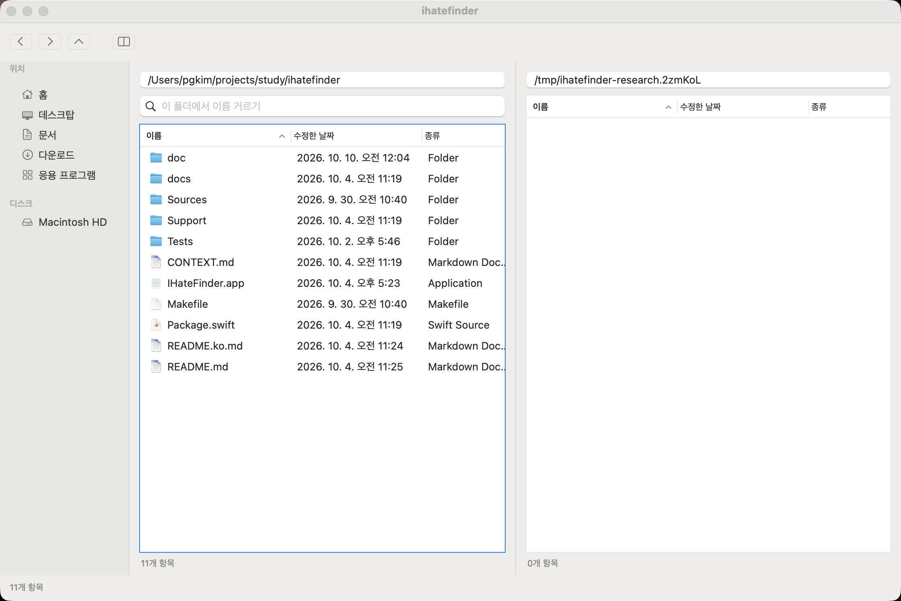

일상 파일 작업의 연결이 약하다
지금 앱은 정확한 경로를 알고 있는 두 폴더 사이에서 파일을 다루는 도구로는 꽤 갖춰져 있다. 복사·이동·충돌 처리·취소·실행 취소·Quick Look·현재 폴더 거르기·외부 변경 갱신·마지막 위치 복원이 이미 있다. 아쉬운 쪽은 내 장소를 다시 찾고, 하던 일을 유지하고, 찾은 파일로 다음 작업을 이어가는 흐름이다. 기능 수를 더 세기보다 여기를 메우는 편이 네가 말한 ‘0.3 Finder’에 가깝다고 본다. 이건 사용 빈도를 측정한 순위가 아니라 현재 구현과 작업 흐름을 대조한 판단이다. [Source 1][Source 3][Source 5][Source 7]
가장 아쉬운 부분
1. 내 폴더를 등록해 두는 기능이 없다. 사이드바는 홈·데스크탑·문서·다운로드·응용 프로그램과 디스크다. 프로젝트 폴더를 추가하고 순서를 바꿔 계속 쓰는 ‘내 장소’가 없다. 마지막 좌우 위치 복원과 뒤로/앞으로는 있지만, 여러 고정 작업 폴더를 골라 돌아가는 것과는 다르다. 첫 큰 기능을 고르라면 나는 사용자 즐겨찾기를 고르겠다. 주소 자동완성과 최근 폴더 목록은 각각 별도 후속 후보로 둔다. [Source 5][Source 9][Source 12]
2. 정확한 경로를 기억해야 주소창이 편하다. 직접 입력과 ~ 확장은 되지만, 폴더 후보를 고르는 앱 전용 완성과 경로의 조상을 눌러 이동하는 표면은 없다. 일부 이름만 기억할 때도 쉽게 도달하게 해야 주소창이 이 앱의 강점이 된다. Finder의 Go to Folder도 경로 후보를 제공한다. [Source 10][Source 13]
3. 두 곳의 작업은 유지하지만, 세 번째 작업 자리를 만들 수 없다. 양쪽 창과 마지막 경로·정렬·숨김 상태 복원은 있다. 앱 자체의 새 창·탭 모델은 없다. A/B를 둔 채 C의 선택과 방문 맥락도 붙잡는 일이 불편해질 구조다. 추가 자리와, 기존 자리의 선택·스크롤을 보존하는 개선은 따로 다룰 필요가 있다. 탭·새 창·작업 공간을 모두 만들 필요는 없다. [Source 4][Source 5][Source 17]
4. 파일 위치를 모르는 순간에는 거르기가 답을 못 준다. Cmd-F는 현재 폴더의 이름 목록만 줄인다. 이 기능은 실제 화면에서도 확인했다. ‘프로젝트 아래 어디엔가 있는 파일’을 찾는 하위 폴더 검색은 없다. 검색을 넣는다면 결과에 원래 경로를 보여주고, 부모 폴더에서 선택한 뒤 기존 복사·이동으로 이어져야 한다. 범위·취소·읽지 못한 폴더도 설명해야 한다. Spotlight와 자체 재귀 이름 찾기를 한 번에 만들자는 뜻은 아니다. [Source 10][Source 11][Source 14][Source 130]
5. 이미 잘하는 조작이 화면에 덜 드러난다. 상단 버튼은 뒤로·앞으로·위·양쪽 창이다. 반대쪽 복사/이동은 F5/F6에 있고 Quick Look도 있지만, 앱 메뉴와 우클릭 메뉴에 직접 명령으로 나오지 않는다. ‘반대쪽 <폴더명>으로 복사 (F5)’, ‘이동 (F6)’, ‘미리보기 (Space)’를 보이게 하면 이 앱을 쓸 이유가 더 분명해진다. Marta가 버튼에 명령과 단축키를 함께 보여주는 것도 참고할 만하다. 실제로 네가 못 찾았다는 관측은 아니고, 표면을 보고 내린 개선 판단이다. [Source 9][Source 10][Source 11][Source 15]
6. 실패 뒤 다음 행동이 수동 작업으로 남는다. 진행·취소·부분 결과와 복구 경로는 이미 나온다. 다만 결과는 일회성 텍스트 시트이고, 닫은 뒤 다시 열거나 보존 위치로 이동·선택하고 미처리만 재시도하는 전용 흐름은 없다. 남은 잘라둔 항목을 다시 붙여넣는 재시도는 가능하다. 엔진을 다시 만들기보다 ‘최근 결과 다시 보기 → 실제 위치 열기 → 상태에 맞는 다음 행동’이 필요한 쪽이다. [Source 2][Source 9]
나라면 이렇게 진행한다
- 먼저 작은 수정: 이미 있는 F5/F6·미리보기를 메뉴에 드러내고, ‘찾기’ 메뉴를 현재 폴더 이름 거르기라는 실제 범위에 맞게 표시한다. 확인된 디스크 알림 구독 문제도 별도로 바로잡는다.
- 그다음 기본 선택: 사용자 즐겨찾기. 등록·삭제·순서·저장까지 끝내고, 최근 폴더나 주소 후보는 별도 개선으로 판단한다.
- 불편한 장면에 따라 순서를 바꾼다: 파일 이름은 알지만 위치를 모르면 검색이 먼저다. A/B/C를 동시에 붙잡아야 하면 추가 작업 자리가 먼저다. 부분 실패 뒤 복구가 문제라면 결과와 다음 행동을 연결하는 개선이 먼저다.
사진을 내용으로 고르는 일이 중심이면 썸네일이나 상시 미리보기의 순위를 올릴 수 있다. 클라우드·공유·외장 디스크 작업이 중심이면 직접 공유·꺼내기·공급자 상태 표시가 중요해진다. 현재 목록에는 그 전용 표면이 없지만, Quick Look이나 일반 파일 경로를 통한 우회까지 불가능하다는 뜻은 아니다. 원격 연결·내장 터미널·전송 큐·Finder의 모든 보기 방식을 처음부터 묶지는 않겠다. [Source 3][Source 5][Source 9][Source 10][Source 12][Source 15][Source 17][Source 18]
내가 잡을 최소 실용성 기준은 다운로드에서 파일을 확인하고, 이름을 고쳐 내 프로젝트 장소로 옮기고, 다른 곳을 들렀다가 하던 작업으로 돌아오는 흐름을 이 앱에서 끝내는 것이다. 위치가 불명확하거나 일부 작업이 실패했을 때도 다음 행동이 보여야 한다. ‘Finder가 한 번도 뜨지 않음’을 목표로 삼을 필요는 없다. 다른 대체 파일 관리자도 시스템 표면의 일부는 남겨 둔다. [Source 4][Source 5][Source 17][Source 18]
확인된 작은 코드 문제
디스크 연결/해제 observer가 NotificationCenter.default에 붙어 있다. Apple 계약은 NSWorkspace.shared.notificationCenter를 요구한다. 별도 Swift probe에서도 두 센터가 다르고 synthetic mount 알림이 workspace 쪽에만 전달됨을 확인했다. 코드와 플랫폼 계약의 불일치는 확인됐지만, 실제 외장 디스크를 연결해 사이드바 장애를 본 것은 아니다. 위치: Sources/IHateFinder/BrowserWindowController.swift:78-89. [Source 9][Source 20][Source 21]
조사 방법과 검증
현재 코드와 동작 문서, Finder 및 대안 공식 문서를 대조하고 반론 검토를 거쳤다. 관련 테스트는 240개 모두 통과했다. 실제 앱에서는 주소 이동·양쪽 창·현재 폴더 거르기를 확인했다. 네 실제 작업 빈도, 대량 폴더 성능, 클라우드와 물리 외장 디스크 동작은 실측하지 않았다. 제품 코드는 바꾸지 않았고 조사용 앱·임시 홈·브라우저 탭·외부 저장소 clone은 정리했다. 자세한 근거는 조사 보고서, 실제 앱 확인, 알림 센터 검증에 있다. [Source 7][Source 11][Source 21]
출처
- [Source 1] README.ko.md
- [Source 2] 동작 기준
- [Source 3] 제품 목표
- [Source 4] AppDelegate.swift
- [Source 5] WorkspaceStore.swift
- [Source 7] 실행한 테스트
- [Source 9] BrowserWindowController.swift
- [Source 10] FilePaneController.swift
- [Source 11] 실제 앱 화면과 조작
- [Source 12] Apple: 사이드바 사용자 장소
- [Source 13] Apple: 폴더로 바로 이동
- [Source 14] Apple: Finder 검색
- [Source 15] Marta: 명령과 단축키
- [Source 17] QSpace: 작업 공간
- [Source 18] ForkLift: 공식 매뉴얼
- [Source 130] Nimble Commander: 검색 결과에서 다음 작업
- [Source 20] Apple: mount 알림 계약
- [Source 21] 실행한 synthetic 검증
외부 출처 조회일은 2026-10-10이다. Apple 사용자 문서는 macOS 26으로 고정했고, 대안 문서는 제품의 설명을 확인한 것이지 각 제품의 성능을 실측한 것은 아니다.
